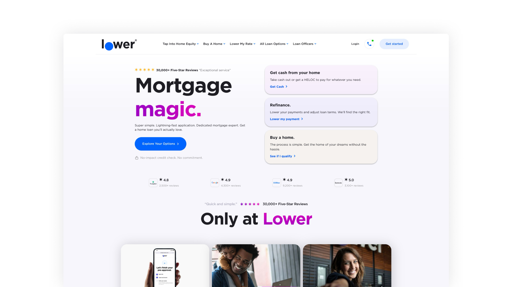
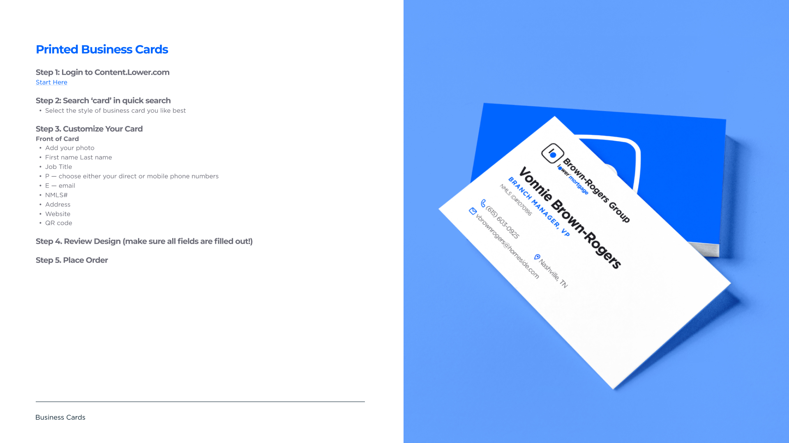
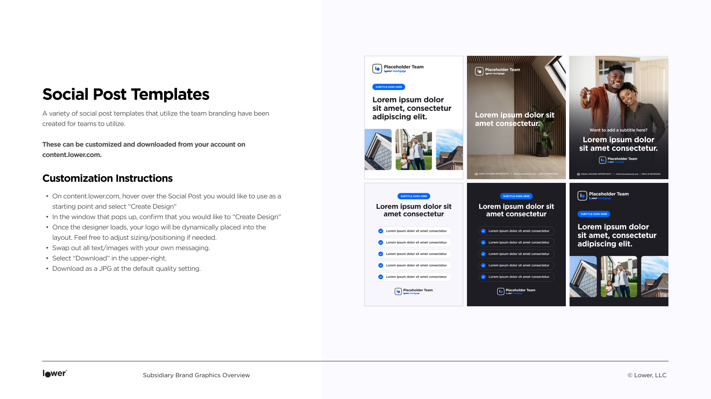
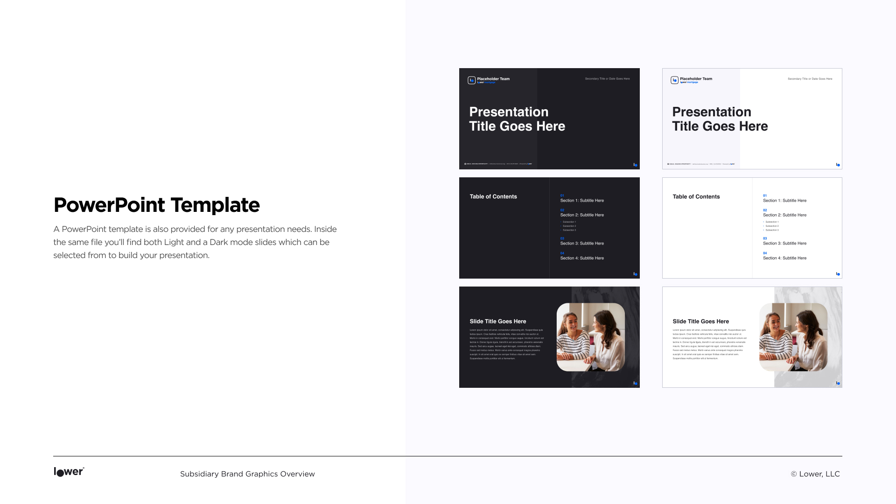

 ← Back to Portfolio
← Back to Portfolio
I owned marketing initiatives from start to finish across multiple platforms. These initiatives contributed to Lower's most successful business quarter to date. I worked with a team of other designers, product developers, and compliance specialists, as well as with Lower's executives to ensure information accuracy, met timelines, and brand integrity throughout all touchpoints. On this small but mighty marketing team we support both the corporate level B2B facing efforts as well as the consumer facing campiagns of the D2C side for the retail branches.
This entailed a wide variety of projects including: digital ads, email marketing, social media content, print collateral, pitch decks, presentations, and event materials. I also designed landing pages and maintained our CMS.




← Back to Portfolio